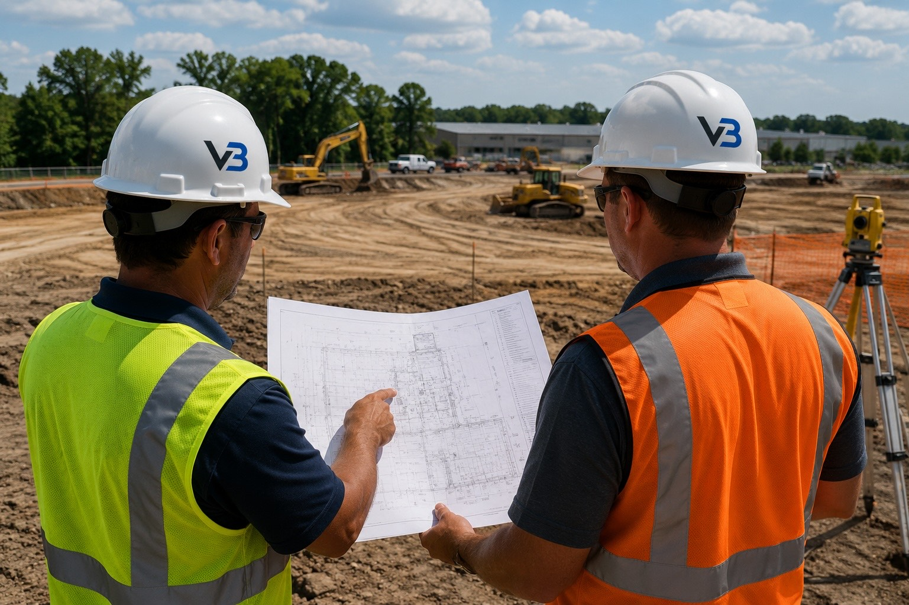

Blog · Guide · Published June 2026
Civil Site Work Checklist for Commercial Projects in Greater Houston

Civil site work is where most commercial projects lose two weeks of schedule — usually because something below grade was caught late. Here's the checklist commercial GCs in Greater Houston should walk through before breaking ground on a new pad site.
1. Confirm the civil set is buildable
Before mobilizing, read the civil set end-to-end and walk it against the site:
- Survey matches site — benchmarks visible, property pins located
- Existing utilities on the plan match what 811 marks show
- Geotech report is in the set; pad recommendations match the plan
- Detention pond sizing and outfall location are clear on the plan
- SWPPP / E&SC plan is included and matches the disturbed area
- Phasing is realistic for the schedule the owner wants
2. Coordinate the utility taps early
Utility tap coordination is almost always the long lead. Start it the same week the contract is signed:
- Water service tap — city or MUD, with the size and depth confirmed
- Fire line tap — separate permit, separate inspection, separate franchise plumber
- Sanitary sewer tap — city or MUD, including any required pre-treatment
- Electrical service — CenterPoint or co-op, with primary route locked in
- Telecom — conduit path coordinated with the conduit contractor
- Gas service if needed — CenterPoint, with the meter location set
Two of these usually take 4-8 weeks for the provider to schedule the actual tap. Find that out before you've graded.
3. File SWPPP and erosion controls first
Any site disturbing 1 acre or more falls under TCEQ TXR150000. File the NOI before ground disturbance, install the SWPPP measures on the plan before clearing, and log weekly inspections through construction:
- NOI filed with TCEQ, copy on site
- SWPPP binder on site with current operator info
- Silt fence installed on the down-gradient perimeter before clearing
- Stabilized construction entrance installed at every access point
- Inlet protection on existing inlets within the disturbed area
- Rock berms or check dams at appropriate locations
- Weekly inspection log kept current
4. Plan the cut/fill so dirt isn't moved twice
The cheapest cubic yard of dirt is the one that never moves. Before bidding the earthwork:
- Confirm whether the design balances on site or requires net import/export
- Stake the cut and fill zones and walk them with the operator
- Sequence so the cut zone gets stripped first and dirt flows directly to fill
- Identify the soil stockpile location if temporary storage is needed
- Confirm the geotech's compaction spec (% Standard Proctor, lift thickness)
5. Sequence underground utilities
The order matters. Going out of sequence means trenching twice in the same dirt:
- Storm drainage and detention — usually deepest, biggest pipe
- Sanitary sewer — needs gravity slope, hard to relocate later
- Water service and fire line — smaller, more flexible
- Electrical and telecom conduit — latest, shallowest, easiest to fit around the rest
- Gas service — last, set to final grade
If you can put electrical conduit, telecom conduit, and gas line in the same trench with appropriate separation, you save a mobilization and a backfill. Confirm with each utility.
6. Verify pad construction before turning over
Don't sign off on the pad until:
- Density testing meets spec at every lift (typically 95% Standard Proctor)
- Pad elevation is verified by survey or rover, with documentation
- Subgrade stabilization (lime / cement) is complete and tested if specified
- Pad drains away from the building footprint at the required slope
- Compaction reports are stamped by the geotech and signed by the engineer of record
7. Close out properly
Closeout is where as-builts get drawn (or don't) and where SWPPP gets terminated (or sits filed forever as a liability). Don't skip:
- As-built drawings for all underground utilities, with measurements and tie-ins
- Final density and compaction reports filed with the project record
- All inspections passed and signed off by the AHJ
- SWPPP NOT (Notice of Termination) filed with TCEQ at stabilization
- Punch list closed before final payment
- Warranty walk scheduled at 6 and 12 months on settlement-prone areas
Ready to scope your project?
Veritas Builders handles commercial site work across Magnolia, Conroe, Montgomery County, and Greater Houston. Line-item bids, coordinated trades, and one accountable team from raw ground to build-ready.